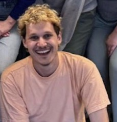
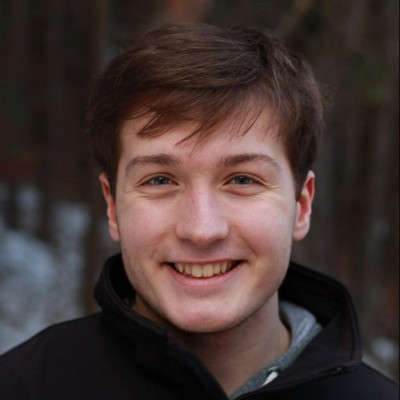
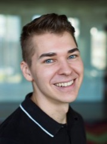
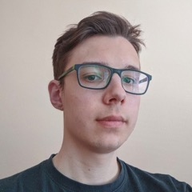
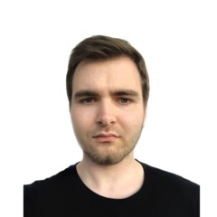
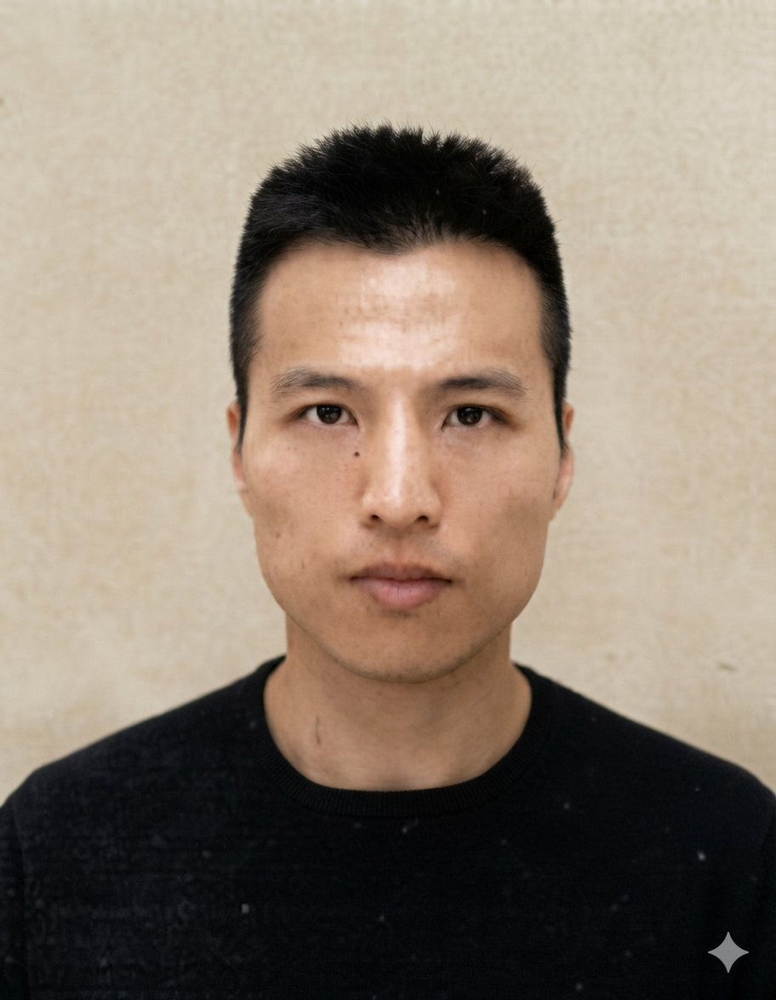
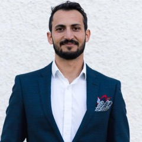

NeurIPS 2026 Competition
Can your method tell when AI genuinely solves the problem and when it is faking it?
Distinguish robust from spurious reasoning in frontier AI.
AIMO (AI Mathematical Olympiad) is an annual competition of AI systems in solving unseen frontier mathematical problems. Thanks to its importance and large prizes ($2.2M USD this year), AIMO attracts huge community attention — last year, the competition was covered by global media The Wall Street Journal and Bloomberg, and participated in by over 4,000+ teams.
The ambition that we have in the Fields Model Initiative is to turn this tremendous engineering effort into scientific knowledge — laying robust stepping stones that will accelerate progress in mathematical reasoning and in AI as a whole.
We believe that interpretability research can play a key role in helping us achieve this goal — allowing us to understand the mechanisms of reasoning in SOTA AI systems and providing actionable knowledge for their future, open advancements.
More broadly, the competition connects interpretability and generalization research around one of the most important questions in AI today: to what extent is the decision-making of frontier AI models generalizable and thus, reliable?
The AIMO Interpretability Challenge will require participants to submit a system that decides which LLM provides an answer to a given AIMO problem robustly. The full problem formulation, data collection, and evaluation protocol are described in our competition proposal paper.
For each problem, we provide one of two LLMs:
The highest-ranked LLM submission to AIMO that passes all our robustness checks.
The highest-ranked LLM for which we verify its reliance on at least one spurious pattern by counterfactual evaluation.
Submitted methods will be evaluated for their accuracy in classifying if a given model responds to a given problem robustly.
Competition submissions will be submitted as Codabench submission bundles that comply with the unified interface defined in the getting-started repository. Submissions will be evaluated on our servers without internet access. The provided validation set will cover all types of models contained in the test set.
Includes the full scale of top-performing models from AIMO 3 — no restrictions on model size.
Subsets the evaluation to the best-performing models below the 10-billion-parameter scale, providing a comparable setup for compute-heavy methods such as Sparse Autoencoders or Transcoders.
Ties in the ranking are broken by efficiency: preference is given to the submission with the faster average runtime over three repeated trials.
$5,000 will be awarded for selected technical reports, regardless of their ranking, judged on their scientific contribution. We are particularly interested in work on generalization of interpretability methods, actionable interpretability, negative results or efficient methods.
Submissions must follow these rules, designed to prevent overfitting and keep the competition fair:
Fill in the registration form for email updates, or join our Discord channel.
Clone the getting-started repository and submit one of its example solutions as-is to see your submission in the Codabench leaderboard.
Wrap your method in the Codabench interface specified in the getting-started repository, and draw on the reference baselines for worked implementations. No internet access is available at evaluation time.
Iterate on the leaderboard until the final deadline on November 1, 2026 — with $12,500 in prizes across the Main and Small Models tracks.
Need compute support? Submit a brief proposal in the Fields Model Initiative to request access to compute for your participation.
The challenge is open to everyone — academic researchers, independent researchers, and industry practitioners alike. There are no restrictions on team size, affiliation, or career level. Students on all education levels are welcome!
No. The AIMO Interpretability Challenge is a separate competition. You will be given access to AIMO model submissions as part of the provided environment — you do not need to submit to AIMO yourself.
The Main Track covers the full scale of top-performing models from AIMO 3 with no restriction on model size. The Small Models Track subsets the evaluation to the best-performing models below the 10-billion-parameter scale, offering a comparable setup for methods that are more compute-heavy to train — such as Sparse Autoencoders or Transcoders — where analysing very large models may be infeasible.
Submissions must be packaged as Codabench submission bundle and must conform to the unified interface defined in the getting-started repository. Containers are evaluated on our servers without internet access. Detailed technical documentation and a starter kit are available in the getting-started repository.
Yes. A starter kit with worked examples and full documentation is available in the getting-started repository, with baseline implementations in the baselines repository. The problem formulation and evaluation methodology are described in our competition proposal paper, available now on arXiv.
Yes, teams may submit to both the Main Track and the Small Models Track independently.
Submissions are ranked by accuracy in correctly identifying the robust model from each pair on the held-out test set. The Main Track and Small Models Track are ranked separately.
Reach out to us at aimo-interp@gmail.com or open an issue in the getting-started repository. We aim to respond within 48 hours and will update this FAQ regularly.
The organizing team combines expertise in AI evaluation, interpretability, and data collection with top-tier olympiad-level mathematicians — a combination that lets us curate the high-quality robustness validation this challenge is built on. Several of us are actively involved in related initiatives, including AIMO, bringing first-hand experience running competitions at scale.

AW
RB
MS
JK
MK
CL
FBFor any questions about the challenge, compute access proposals, or technical issues, please reach out — we're happy to help.
Primary contacts: aimo-interp@gmail.com and the AIMO-Interp Discord.
We aim to respond within 48 hours. For technical questions, please also consider opening an issue or discussion on the corresponding GitHub repository. This FAQ is regularly updated.